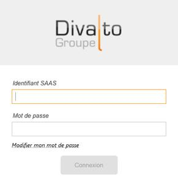

Accueil | Divalto SAAS | Gestion des licences nommées par DLMT
La gestion des licences nommées dans le cloud diffère légèrement de la gestion standard car un site dans le cloud Divalto est référencé en tant que tel au niveau de l’ADV Divalto.
DLMT, après la connexion, affiche la boîte de dialogue suivante :

Il ne s’agit pas d’un utilisateur de l’ERP et il n’existe pas dans l’annuaire LDAP : Il donne simplement accès à l’utilisation de DLMT pour la gestion des licences et des comptes du site dans le cloud.
DLMT se connecte alors au serveur du cloud pour la gestion des utilisateurs et des licences nommées. L’affectation des profils des utilisateurs est rigoureusement identique à celle de DLMT standard, en privilégiant néanmoins la gestion des utilisateurs à partir de l’annuaire LDAP du site dans le cloud.